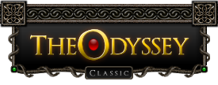
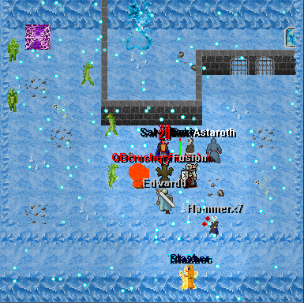

The Odyssey Online Classic
History
The Odyssey Online Classic was the first project I ever worked on. It was also the only CodeMallet project that was not written from scratch. Odyssey was originally written by Justin Schumacher (Bugaboo). When he grew too busy to maintain the project I was able to obtain the source code and greatly augment it over the years. Justin stated that as long as Odyssey was always free that he was fine with releasing the rights to the art and code.
The Odyssey Classic main server ran for over 10 years! It was supported through the online store which allowed people to buy custom sprites and houses.
Gameplay
The main attraction of Odyssey's gameplay are guilds. Players join a guild and ally with each other against the rest of the world. Guilds have halls where members can hang out and store excess equipment. Players level up in Odyssey by killing monsters or other players. There are quests ranging from easy to very difficult where players get equipment to help them on their journey.
Players have hitpoints (HP) for their life which regenerate slowly. Potions are available to use if you are close to death. There are two main types of classes. A warrior class that focuses on hand to hand combat, and a mage class that focuses on magic. Traditionally, most people enjoy playing the warrior class as it provides for very balanced battles focused on skill rather than luck.
Current Status
The source code for Odyssey is released and there are several projects still running today. Visit OdysseyClassic.com for more information on current projects. You may also download the source code.
If you have a project based on Odyssey, send me an email (see contact page) and I will post a news update for players to help find your project.